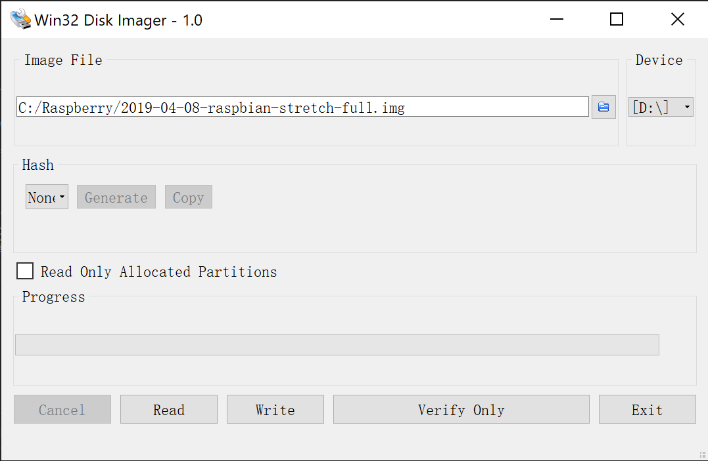

第一次安装树莓派，手边只有笔记本和一台无线路由器。没有额外的显示器，键盘和网线。进行了一番调查和尝试之下，终于在这些条件下配置并安装树莓派，然后在笔记本上通过SSH连到树莓派上。
前期准备
刚刚打开树莓派的时候，我是懵逼的。连电源线该插在哪里，SD卡的插入的方向等问题都比较疑惑。赶紧找来主板的结构体看了一眼，压压惊。
主要硬件：
- 树莓派3B+主板（其他型号过程类似）。
- 一块SD卡，用来安装Raspbian。
- 供电电源及Micro USB线（注意电源的质量和功率也很重要，最好用那种带开关的线）。说明书上的安全指南指出，
本产品仅可连接到额定功率为5V、最小电流为2.5Amp的直流电外接电源。所以在接入电源前，要先检查一下电源的输出功率。
制作Raspbian的SD卡
SD卡将包含Raspberry Pi的操作系统（操作系统是一种使Raspberry Pi工作的软件，就像PC里的Windows和Mac里的OSX）。这个操作系统与大部分电脑的系统有很大的不同。由于我使用的是Windows操作系统，所以这里的步骤是记录Windows下的操作步骤。
- 下载 Raspberry Pi 操作系统 ：https://www.raspberrypi.org/downloads/
这里一共有三个版本，为了图省事，我安装的是Raspbian Stretch with desktop and recommended software
下载完成后，解压镜像，以备后用。这个 .img文件只能用专用的软件写入SD卡中。接下来需要使用另外一个工具烧录镜像到SD卡中。 - Win32DiskImager下载 : https://sourceforge.net/projects/win32diskimager/
下载并且安装好以后就可以开始烧录SD卡了。 - 将Raspbian 镜像写入 SD卡 : 打开Win32DiskImager。在Image File上选中解压出来的Raspbian Image. Device指向SD所在的盘符。点击Write就开始烧录了。整个过程可能需要几分钟就可以完成。

配置WIFI
由于我的环境是没有额外的显示器，鼠标键盘，甚至没有额外的网线。所以需要第一次启动之后就使用WIFI的方式连接到树莓派上。因此需要现在SD卡上配置好WIFI。首先在SD卡的根目录下添加一个名为 wpa_supplicant.conf的文件，然后在该文件内添加以下的内容 ：
1 | ctrl_interface=DIR=/var/run/wpa_supplicant GROUP=netdev |
插入SD卡启动树莓派就能直接连接到你的WIFI网络了（切记树莓派现时只支持802.11.n的WIFI标准所以只能连接2.4G网络，所以你需要确保你所连接的是2.4G的通道而不是5G的。
启用SSH
Raspbian 默认情况下是将SSH服务关闭的。开启SSH的方法很简单在树莓的官网上也有介绍，只要在新建一个名为ssh文件到SD的根目录就能完成。这里要注意的是，新建的是文件，并且确保去掉后缀名。而不是新建SSH的文件夹。
查找IP
配置好SD卡之后，将SD插入树莓派，接入电源就能正常启动了。要想连接到树莓派首先要找它的IP地址。我使用的TP-LINK路由器，可以登陆到路由器上直接看到对应的IP。也可以通过其他一些IP扫描工具找到对应的IP。
使用PuTTY 连接到树莓派上
在这里可以Download PuTTY。
安装好之后打开PuTTY，输入上一步找到的IP地址就可以连进去。默认的用户名是pi，默认密码是raspberry
使用VNC Viewer连接到树莓派
使用PuTTY连接到树莓派上，就可以开始安装VNCServer, 从而使用界面了。可以直接使用命令来安装你的VNCServer。
1 | sudo apt-get install tightvncserver |
成功安装以后，就可以在终端中输入”vncserver”来启动你的远程界面服务器。登陆时会提输入vncserver的密码，输入确认以后会看见类似下面的内容。这样vncserver就成功启动了。
可以从这里下载VNC Viewer
下载好以后，在VNC Viewer中输入树莓派的IP，以及刚才设置好的密码，登陆到树莓派上。